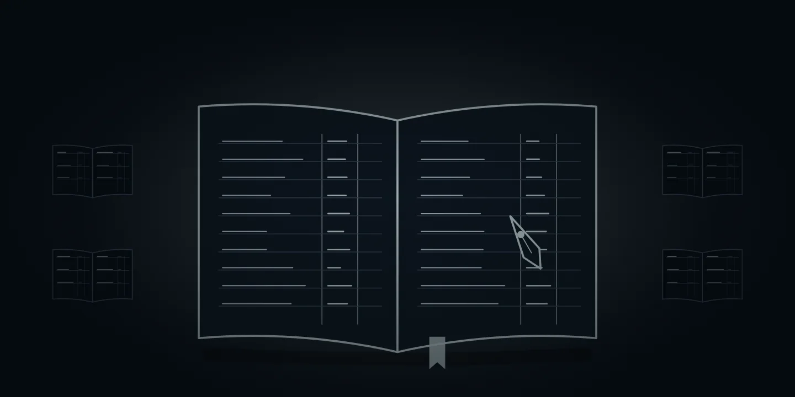
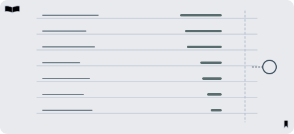

De … største af temaets … selskaberTemaets … selskaber
Tryk på et selskab for at se mere om det.
Vis alle … selskaber i temaet
Andele i PMINDI, den udgave af fonden, der udbetaler udbytte, pr. … (fondens data).

Et af de … temaer i NewDeal Invest
Hvilken aktivitet giver selskabet en indtægt?
Mining, handel, udstedelse og tjenester omkring netværket er forskellige roller. Her er det selskabernes produkter og indtægter, du kan undersøge, ikke et kursmål for kryptovaluta.

… %
af PMINDI er placeret i temaet Krypto.
Andele i PMINDI, den udgave af fonden, der udbetaler udbytte, pr. … (fondens data).
De … temaer efter størrelse. Krypto er nr. ….
Det har vi skrevet
Ordret uddrag af NewDeal Invests egne ugebreve og indlæg om temaet, med dato og link til hele teksten. Det er ikke en anbefaling.
Læs hele teksten på bloggen (åbner i nyt vindue)»Tilbage til blockchain. Med GENIUS Act og CLARITY Act har USA ændret rammevilkårene for blockchainindustrien dramatisk.«
Krypto
I midten står bogen. Omkring den står fire roller. Tallet ved hver rolle er dens andel af fonden. Tryk på en rolle for at se, hvad selskaberne gør, og hvem de er.
Hvad selskaberne gørStore haller med specialcomputere hjælper med at kontrollere og skrive nye poster i bitcoins bog. Netværket belønner dem med nye bitcoin og gebyrer. Det arbejde kaldes mining.
Sådan tjener selskaberne pengePå belønningen fra netværket. Strøm og udstyr er de store udgifter.
Flere af minerne bygger nu også datacentre. Det kan du læse om på siden Datacentre.
Tryk på et selskab for at se, hvad det laver.
Hvad selskaberne gørKunderne handler og opbevarer kryptovaluta og andre kryptoaktiver gennem en app.
Sådan tjener selskaberne pengeIsær på kundernes handel og på tjenester omkring deres beholdninger. Det er værdien af handlerne, ikke Coinbases omsætning.
Gemini har meddelt, at selskabet afvikler driften i Storbritannien, EU, andre europæiske lande og Australien (05.02.2026).
Tryk på et selskab for at se, hvad det laver.
Hvad selskaberne gørDeres vigtigste ejendel er en beholdning af én bestemt kryptovaluta. Kun ét af de syv, Strategy, ejer især bitcoin. De andre ejer især ether, solana eller HYPE (tre andre kryptovalutaer).
Sådan tjener selskaberne pengeForskelligt. Nogle har en anden forretning ved siden af, fx software hos Strategy. Bit Digital får det meste af sin omsætning fra at leje computerkraft ud til AI (cloud-tjenester).
Tryk på et selskab for at se, hvad det laver.
Hvad selskaberne gørEn stablecoin er en digital mønt, der skal svare til én dollar. Circle udsteder USDC og bytter den tilbage til dollars, én til én. Pengene bag mønterne ligger i reserver.
Sådan tjener selskaberne pengeCircle tjener især renter på reserverne. Det var næsten hele omsætningen i 2025.
Det andet selskab, CSLM Digital Asset Acquisition Corp III, er et skalselskab: et selskab uden egen drift, som er stiftet for at gå sammen med et andet selskab. Det har aftalt at gå sammen med First Digital Group (06.10.2026). Sammenlægningen er ikke gennemført pr. 24.10.2026.
Se efter: Hvilken rolle handler det om: udstyr, handel, udstedelse eller en tjeneste?
Tryk på et selskab for at se, hvad det laver.
Cirklens areal svarer til rollens andel af fonden. Bogen har fast størrelse, fordi den er netværket og ikke en andel.
Mærket ved et selskab betyder, at selskabet også laver noget, der hører til temaet Datacentre eller Fintech. I fondens opdeling tælles selskabet kun med her.



Naboerne
Seks af temaets selskaber, CleanSpark, Bitdeer, Riot Platforms, Keel Infrastructure, Galaxy Digital og Bit Digital, laver også noget, der hører til temaet Datacentre. Coinbase og Circle laver også noget, der hører til temaet Fintech. I fondens opdeling tælles de otte selskaber kun med her.
Omvendt driver fire selskaber under Datacentre også bitcoin-mining.
IREN (tidligere Iris Energy) driver også bitcoin-mining, men er ved at bruge sin strøm og sine haller til at leje computerkraft ud til AI i stedet (AI-cloud). Selskabet står under Datacentre.
Her er udvalgte opslag og videoer fra medier og selskaber. De er ikke fondens holdning.
Se efter: Hvilken rolle handler det om: udstyr, handel, udstedelse eller en tjeneste?
CoinDesk @CoinDesk · på engelsk
CoinDesk ejes af Bullish, som er blandt fondens selskaber.
Kort fortalt Ifølge CoinDesk har en amerikansk bankmyndighed, OCC, lavet den første endelige regel under den nye lov om stablecoins. Handelspladser for krypto skal nu søge godkendelse af de bonusordninger for stablecoins, som de allerede har.
Hvad skal du lægge mærke til? Læs opslaget sammen med afsnittet om udsteder digitale dollars i bogen. Hvilken rolle handler det om: udstyr, handel, udstedelse eller en tjeneste?
Bloomberg @business · på engelsk
Kort fortalt Ifølge Bloomberg lancerer JPMorgan en digital udgave af bankindskud på Ethereum. Dermed udvider banken sit arbejde med betalinger via blockchain, den teknik, som bogen i et kryptonetværk bygger på.
Hvad skal du lægge mærke til? Læs opslaget sammen med afsnittet om udsteder digitale dollars i bogen. Hvilken rolle handler det om: udstyr, handel, udstedelse eller en tjeneste?
Bloomberg @business · på engelsk
Kort fortalt Ifølge Bloomberg er CryptoBilis, en malaysisk forhandler af små enheder, der gemmer koderne til krypto (hardware-tegnebøger), kommet i centrum af en efterforskning af tyverier fra enhederne.
Hvad skal du lægge mærke til? Læs opslaget sammen med afsnittet om sikkerhed. Hvilken rolle handler det om: udstyr, handel, udstedelse eller en tjeneste?
Opslagene er udvalgt af teamet bag NewDeal Invest. Afsenderne og de nævnte selskaber står ikke bag denne side, og opslagene er ikke fondens vurdering.
Se efter: Hvilken rolle handler det om: udstyr, handel, udstedelse eller en tjeneste?
Se efter: Hvilken rolle handler det om: udstyr, handel, udstedelse eller en tjeneste?
Tryk på et selskab for at se mere om det.
Andele i PMINDI, den udgave af fonden, der udbetaler udbytte, pr. … (fondens data).
Udvalgte offentlige opslag om selskaberne i temaet. Opslagene er andres og ikke NewDeal Invests holdning.
Henter opslag …
Kilder: Finanstilsynet og selskabernes årsrapporter. Se Kilder og kreditering.
VIDEOER OG OPSLAG
NEWDEAL INVEST · 2025-10-09
Om Krypto · starter ved 2:14
Se på YouTube ↗X · 2026-09-16
X · 2026-09-16
Videre